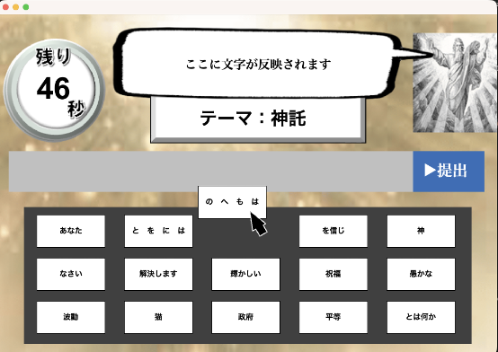
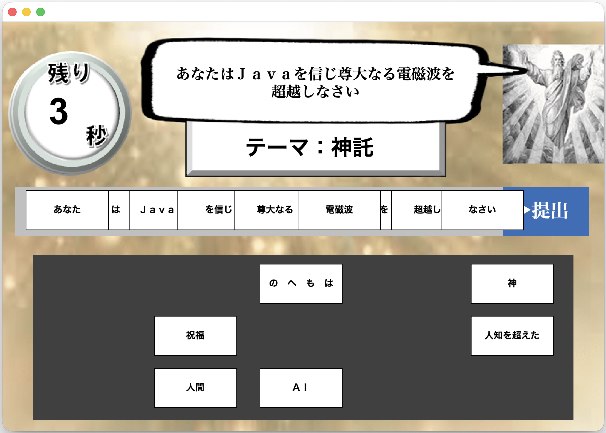
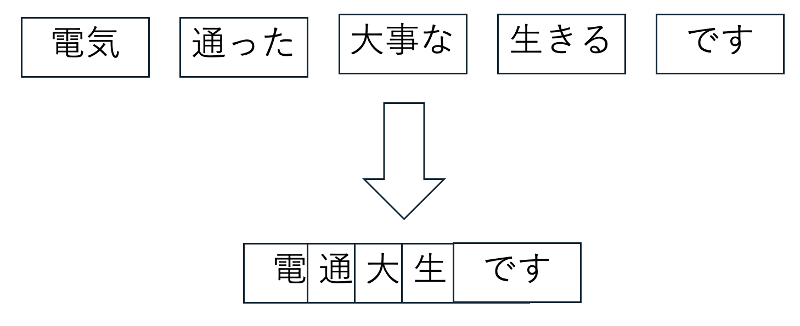
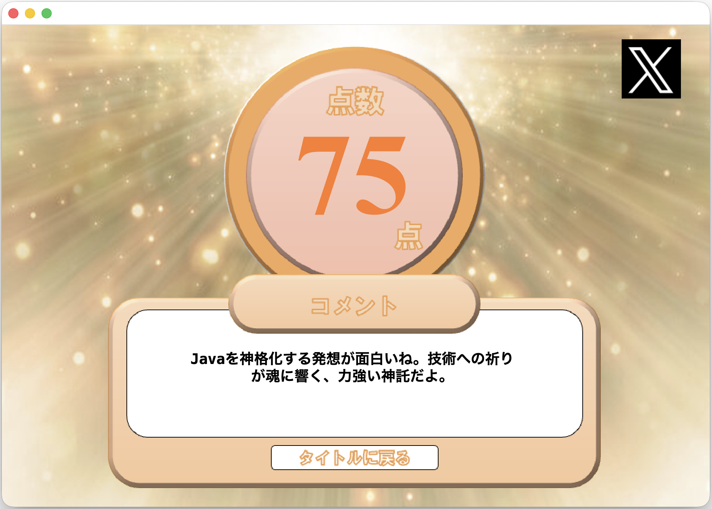
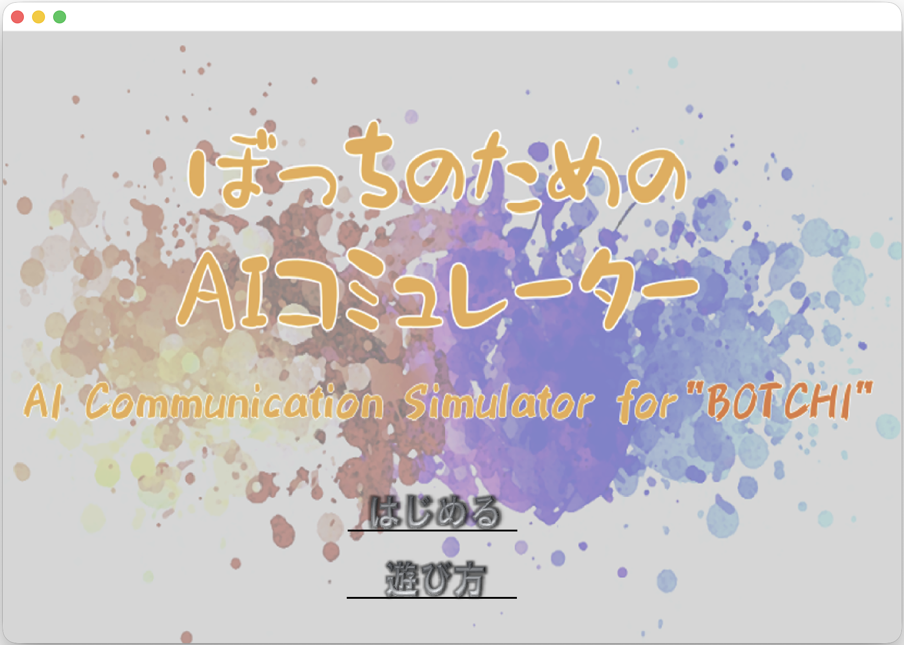

GitHub にてソース公開中です ※再配布を禁止します
https://github.com/zakky-daily/ai_words_game
2025年（大学2年）授業課題で制作したもの
（課題内容：Javaオブジェクト指向言語によるGUI開発）
3人による共同作業
ゲームアイデア元は 教祖爆誕〈ClaGla〉、たった今考えたプロポーズの言葉を君に捧ぐよ。〈ClaGla〉 などです。
ただ、本家は複数人でしか遊べないので、それを1人でも遊べるように開発した、というのが基本的なコンセプトです。

ゲームを開始すると、言葉が書かれた15枚のカードと、テーマ（プロポーズ・神の信託・命乞いのいずれか）が与えられます。
カードをドラッグ&ドロップすることで、言葉を並べることができます。
制限時間内に、テーマに沿っていて、かつユニークで相手を惹きつけるような文章を作ってください！

例えば「あなたはJavaを信じ尊大なる電磁波を超越しなさい」とか。基本的にノリで作ってしまってOK。

カードは「重ねる」ことが可能です。
カードの種類は有限だけれど、このシステムによって生み出せる言葉も無限大です。

本家はプレーヤーによる相互投票ですが、本ゲームではAIが文章を採点してくれます。
思ったより褒めてくれることもあれば、結構辛辣に返してくることもあって意外と面白いです。
Twitter投稿機能も搭載しました。

ホーム画面。詳細な遊び方はここからご覧ください。